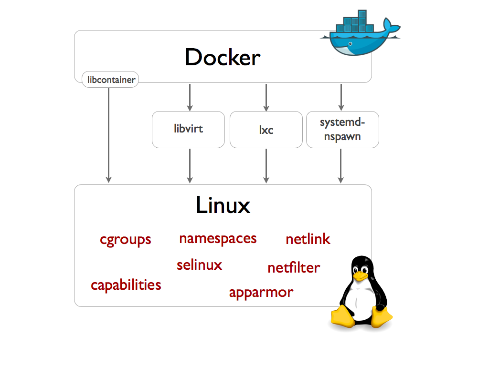

其实docker也火了好久了。一年之前我就想试下，结果在mac上安装太麻烦了，由于不支持LXC，还要搞个VirtualBox的虚拟机过渡，感觉很不爽。既然要用虚拟机，不如直接选择Vagrant。
但最近Docker for Mac发布了，据说不再需要VirtualBox了，赶紧来试下，顺便总结下自己对于虚拟化的一些理解。
Docker for Mac
首先要知道docker中的一些基本概念：
- docker daemon：用于管理容器的进程，对外暴露接口
- docker client：用户端的命令行工具，可以通过unix socket（unix:///var/run/docker.sock）或tcp协议与daemon进程通信。与daemon进程其实是一对多的关系。
- image：镜像，就是一个预先定义好的环境，可以直接载入容器中运行。只读，由Dockerfile定义。Dockerfile某种意义上类似linode中的的StackScripts，都是一堆命令的集合，在环境初始化的时候执行。
- registry：仓库，存放各种镜像，有点类似maven中的仓库概念。docker提供一个官方仓库Docker Hub，也可以自己搭建私服。
更多的docker相关知识还是看官方文档，各种第三方教程可能比较落后，毕竟docker现在版本迭代非常快。
由于历史原因，要在mac上使用docker，有几种选择：
- boot2docker：基本原理是自带一个最小化的VirtualBox的Linux镜像，在虚拟机中运行docker daemon，然后本机的docker client通过网络与deamon交互。这是一个已经废弃的项目，不要被一些老的文章误导。
- Docker Toolbox：boot2docker的继任者，去年8月发布的。基本原理是一样的，都是利用了一个VirtualBox的虚拟机，但Docker Toolbox同时封装了其他一些常用的工具，让使用更方便。也是官方推荐的安装方式之一。
- Docker for Mac：今年6月发布的最新工具，解决了Docker Toolbox的很多痛点，用起来更爽了。基本原理还是内嵌一个虚拟机，但是从VirtualBox换成了xhyve（这个我在文末会讲），而且对虚拟机做了很多定制化，反正就是很好很强大就对了。对于新老虚拟机的一些区别可以参考FAQ。
Docker for Mac虽然好用，但是有一些限制条件：
- mac必须是2010年之后的型号。其实就是CPU要支持Intel VT-x。
- 系统10.10.3以上。我正好是10.10.3 Yosemite，但安装之后提醒我10.10.3下有一个已知bug，可能吃满CPU，目前只能重启Docker for Mac来解决。
- 至少4GB内存。
- 系统中不能安装有VirtualBox 4.3.30之前的版本。我之前为了用Vagrant，正好安装了VirtualBox 4.3.30。用
brew cask安装的，显示为virtualbox4330101610。不过也没发现啥问题。
能满足这些条件的话，尽量用Docker for Mac，否则只能用Docker Toolbox了。关于二者的一些区别，可以参考官方文档。
Docker for Mac安装过程还是挺简单的，和安装普通的mac应用一样，对着官方文档一步步来就可以了，如果最后能启动一个nginx的容器，正常访问http://localhost的话，就算成功了。说下我碰到的一些问题：
- 拉取nginx镜像的时候，死活拉不下来。似乎我的DNS被污染了，一直报错
dial tcp: lookup index.docker.io on 192.168.65.10:53: no such host。index.docker.io这个域名也是ping不通，似乎使用了AWS的服务，被墙了？于是满世界找国内的镜像，最后使用了DaoCloud，它的文档还挺新的，已经有针对Docker for Mac的配置方法了。 - 配置好DaoCloud的镜像后，居然还是报错
dial tcp: lookup dao-booster.daocloud.io on 192.168.65.10:53: no such host.，但是dao-booster.daocloud.io是可以ping通的，真是见鬼。无奈在/etc/hosts里手动写死ping到的IP，加了两条记录106.75.18.185 m.daocloud.io和183.131.208.55 dao-booster.daocloud.io，终于正常了。 - 如果点击Docker for Mac菜单栏中的
Open Kitematic（Kitematic是一个管理容器的图形界面工具，很好用，如果你用Docker Toolbox的话会自动安装，但用Docker for Mac的话就要自己下载），它会给你一个下载链接，并跟你说下载解压之后放到/Applications下就可以使用了。结果我下载后解压出一个Kitematic (Beta).app，居然打不开，mac会提示说文件已经损坏。。。google了一下应该是个bug，解决方法见这里。
Docker for Mac安装成功后，命令行会多几个工具：
- docker：其实就是docker client
- docker-compose：似乎是用于部署分布式服务的，同时启动多个容器之类的，没用过
- docker-machine：非Linux平台如果想用docker都要用到虚拟机，这个工具就是用来管理虚拟机的。以前boot2docker也会自带一个类似的命令
boot2vm（好像是这个名字），功能上差不多。但Docker for Mac中应该用不到这个命令了，除非你想蛋疼的搞多个虚拟机，或者让Docker Toolbox与Docker for Mac共存。这个命令可能是为了将虚拟机从Docker Toolbox迁移到Docker for Mac才存在的。
总的来说，Docker for Mac已经完善很多了，用起来很接近原生的体验了。以前用Docker Toolbox很蛋疼的一点就是网络问题，借用官方的一张图：
首先我必须要设置一堆环境变量，才能让docker命令知道去连接那个虚拟机。其次如果我部署了一个nginx容器，我要用http://12.34.56.78才能访问（12.34.56.78是虚拟机的IP），而不能直接用http://localhost访问。
反正就是处处都会透出“虚拟机”的存在，很蛋疼。那我还不如直接去用虚拟机。。。
Docker for Mac就好很多了，让你感受不到虚拟机，像原生docker一样直接使用。
最后截图留念：
虚拟化
虚拟化（Virtualization）实在是一个很学术的词，并非我们通常意义上所理解的虚拟机，摘录一段Wiki上的说明：
虚拟化是一个广义的术语，对于不同的人来说可能意味着不同的东西，这要取决他们所处的环境。在计算机科学领域中，虚拟化代表着对计算资源的抽象，而不仅仅局限于虚拟机的概念。例如对物理内存的抽象，产生了虚拟内存技术，使得应用程序认为其自身拥有连续可用的地址空间（Address Space），而实际上，应用程序的代码和数据可能是被分隔成多个碎片页或段），甚至被交换到磁盘、闪存等外部存储器上，即使物理内存不足，应用程序也能顺利执行。
从这个角度来说，只要能提供一个抽象层并屏蔽底层细节的技术/工具，都可以被算作“虚拟化”的范畴？“进程”是不是虚拟化？JVM呢？以前的各种虚拟光驱（谁还记得Alcohol 120%）也算是虚拟化吧。不过不要纠结这些细节，学术之争不影响使用。能抓到耗子就是好猫。
大多数时候我们谈论的虚拟化，还是特指虚拟机。
虚拟机
我对虚拟机最早的接触，就是Win下用Vmware Workstation 4安装红旗Linux。。。这货现在都没人记得了吧，安装光盘好像还是买什么杂志送的。后来陆续用过VirtualPC、VirtualBox、Vmware Fusion。以前用linode的时候，也了解一些Xen、OpenVZ之类的概念。但一直没有系统的研究过，趁着研究docker的机会一起整理下。
首先要明确的一个概念，就是Hypervisor，又叫做VMM（Virtual Machine Monitor）。通俗的说，就是一个创建、运行、管理虚拟机的程序。上文提到的各种软件，无论VirtualBox、Vmware，还是Xen、OpenVZ，都可以算作Hypervisor。Hypervisor这个词只是限定了软件的功能，而没有限定实现方式。就像所谓的“文本编辑器”一样，可以有多种实现，vim/emacs/nano/sublime之类的。根据Hypervisor的不同实现方式，大致可以分为2类：
- Type 1：Hypervisor直接运行在裸硬件上。从某种意义上来说，这种Hypervisor就是一个微型的操作系统，要自己跟各种硬件打交道，处理上层OS的请求。典型的就是Xen。
- Type 2：Hypervisor运行在OS之上，只是OS中一个普通的应用程序。这个很好理解，我们常用的VirtualBox，Vmware Workstation都是这种。
一般来说，Type1型的效率会更高，毕竟指令可以直接到达硬件，而Type2型中还要经过“GuestOS -> Hypervisor -> HostOS”的一个“转译”过程。但Type2可以利用宿主OS的内存管理/进程调度/资源管理等，实现上应该会简单些。
另一个要理解的概念，就是“全虚拟化”和“半虚拟化”。个人理解：
- 全虚拟化（Full Virtualization）：就是通常意义的虚拟化，所有GuestOS中的操作，都由Hypervisor处理。GuestOS不用做任何修改，也不知道自己是运行在虚拟机中的。
- 半虚拟化（Partial Virtualization）：在全虚拟化的基础上，与GuestOS做了一些“约定”。GuestOS知道自己运行在虚拟机中，一些特殊的操作，可以绕过Hypervisor直接执行（需要和Hypervisor约定好，不过这是我猜的）。这样可以大幅度提高效率，代价就是GuestOS必须修改内核，才能对虚拟机做特定的优化，应该叫做“虚拟机专用版OS”。
有人说全虚拟化/半虚拟化的区别在于是“用软件模拟所有硬件”还是“用特定硬件辅助模拟（比如Intel VT-x）”，我觉得是错的。如果硬件上提供了优化，确实能提高效率，但GuestOS本身还是不知道自己是运行在虚拟机中。这种技术在Wiki中称作“硬件辅助虚拟化”（Hardware-Assisted Virtualization），很多人都会混淆这个概念。
一个典型的例子是在Vmware Workstation中安装虚拟机时，一般还要安装Vmware Tools，能大幅提高虚拟机的性能。我觉得这就是一种半虚拟化，让系统知道自己运行在Vmware虚拟机中，进而一些操作可以利用Vmware Tools去优化。当然你不装也可以，虚拟机也能正常用，就是用着卡点，很多硬件特性（比如3D加速）也不能用。
早期广泛使用的Hypervisor，大多是半虚拟化的，因为这样可以提高虚拟机的性能，比如Xen。在Xen上运行的GuestOS，必须使用特定版本的内核，根据不同的发行版还要自己编译，比较麻烦。由于协议的问题，也不能虚拟Windows，因为要修改Windows内核才行。后来随着CPU厂商逐步提供硬件级别的虚拟化支持（Intel VT-x、AMD-V），全虚拟化的成本大大降低，性能损失也可以接受了，而且GuestOS不需要做任何修改，逐渐成了主流。Xen也开始支持了硬件辅助的全虚拟化（Xen-HVM），可以虚拟Windows了。可见全虚拟化才是大势所趋。
一个经常拿来和Xen对比的Hypervisor，就是KVM。KVM是基于硬件的完全虚拟化（补充一下，这里所谓的“硬件”，特指CPU，要支持Intel VT-x/AMD-V之类的指令集，目前只有CPU能提供硬件级别的虚拟化支持，其他硬件，硬盘/网卡之类的，暂时没有），但它的特殊之处在于它是集成在Linux内核之中的，通过Linux内核去做资源调度、硬件管理之类的，而它本身只负责管理虚拟机。
KVM很大程度上模糊了Type1和Type2的分类。它不是Linux内核之下硬件之上的一个“微型OS”，也不是Linux上的一个应用程序，应该说它就是Linux内核本身。这个Hypervisor不但可以像常规的Linux一样使用（这个Linux到底是HostOS还是GuestOS呢？鸡生蛋蛋生鸡。。。），还可以创建/管理虚拟机，而且像管理进程一样管理虚拟机。很神奇，有点波粒二象性的感觉。。。
关于Xen和KVM的对比，摘录几段话：
从架构上讲，xen是自定制的hypervisor，对硬件的资源管理和调度，对虚拟机的生命周期管理等，都是从头开始写的。KVM是一个特殊的模块，Linux kernel加载此模块后，可以将Linux kernel 变成hypervisor，因为Linux kernel已经可以很好的实现对硬件资源的调度和管理，KVM只是实现了对虚拟机生命周期管理的相关工作。 KVM的初始版本只有4万行代码，相对于xen的几百万行代码显得非常简洁。
在以前没有vt-x的时候，xen致力于不依赖硬件，也不依赖qemu，一步一步把虚拟化做了起来
现在都是xen的历史包袱了
另外提到KVM，就不得不提QEMU，这两个名词总是一起出现。QEMU本质上是一个用软件支持全虚拟化的Hypervisor，可以模拟各种CPU、各种硬件，本来跟KVM没啥关系。由于KVM本身只提供了CPU和内存的虚拟化，但一个完整的虚拟机还要有其他硬件；而且KVM只是一个内核模块，也需要一个用户空间的工具去调用。于是它利用了QEMU已有的代码（反正都是开源的嘛），改造下，成了所谓的qemu-kvm，这样才形成了完整的解决方案。
常见的开源Hypervisor就是Xen和KVM了。从现在的趋势来看，目测KVM会逐步取代Xen，毕竟是Linux官方支持的。
除了开源的Hypervisor，也有一些商业化Hypervisor，最出名的就是Vmware了吧，目前在企业市场主推的是ESXi（话说它的产品线真是乱，vSphere/vCenter/ESX/ESXi）。此外还有微软的Hyper-V（据说这货就是以前的VirtualPC？）。
最后再提一下libvirt。由于有这么多种Hypervisor，每种Hypervisor都有自己的虚拟机规范，大家觉得要管理这么多种Hypervisor好麻烦啊，于是有聪明人（好像是红帽？）想出了一个办法：提出一套统一的管理虚拟机的API和工具（比如命令行的virsh/图形界面的virt-manager），这样就可以对上层用户屏蔽各个Hypervisor的具体实现了。借用Wiki中的一张图：
或者这张图更清楚一些：
容器
容器算是虚拟化中的另外一个潮流，跟Hypervisor的思路完全不同。
关于容器的讨论也有很多了，一些技术细节我也不打算复述，比虚拟机好懂多了。。。有人说容器是“轻量级的虚拟机”，个人感觉这种说法是有点问题的。容器本质上是一种资源隔离机制。普通的进程也可以做到资源隔离，只不过隔离的强度比较弱罢了。容器并没有什么新技术，只是利用Linux内核已有的一些机制，比如namespace/cgroup/AUFS，做到了更好的资源隔离。这里所说的资源包括CPU/内存/IO/带宽等等。
容器相关的技术，其实可以追溯到chroot/FreeBSD jail，更关注于“在已有的系统里创造出一个完全隔离的环境”，而不是“创建一个新的系统”，所以说跟Hypervisor是完全不同的思路。应该称作“沙盒”更合适些？也有点像用于引诱黑客的“蜜罐”。
容器不等于docker。虽然docker是现在最火的容器相关项目。其实docker只是一个容器管理的工具，而不是实现容器的关键技术。早期的docker可以认为就是LXC之上的一层“皮”，但它能火起来是有原因的：
- 做到极端好用。LXC虽然提供了命令行工具，但用起来很复杂。docker极大的降低了使用门槛，一行命令就部署一个服务，一台机器上跑上百个容器，几年前你能想象嘛？
- 提出镜像&仓库的概念。激发了广大人民群众的创造力，每个人都可以创建自己的docker image并分享给其他人。减少了很多重复造轮子的工作。事实证明，立足于群众才是取胜之道啊。
- 将系统与应用解耦，顺应了当前的DevOps潮流。而且向群众们灌输了“App-Centric”的观念，用docker串联开发/测试/交付，对于敏捷开发也有很大好处。
所以，个人感觉，docker的胜利更像是用户体验的胜利，是营销/运营的胜利，而不是传统意义上的，技术突破的那种胜利。。。
docker应该说是很大程度上解放了运维的生产力吧，从侧面也能反应出运维有多么苦逼。。。另外docker也带了一波go语言的节奏？似乎现在的运维都非常喜欢go。
docker不等于LXC。虽然早期的docker只是LXC之上的一层“皮”，但随着docker的火爆，当然也要搞自己一点“原创”的东西（0.9版本之后），不能总是寄人篱下啊。借用一张图：

通俗的说，docker要定义容器的标准，将底层实现都抽象化为libcontainer接口，和libvirt有些类似。到时候LXC只是一种可选的实现而已。不过现在还是只能依赖LXC。
自从容器技术火爆以来，很多人就在争论容器和Hypervisor孰优孰劣。很多人宣称容器将取代Hypervisor。这里面有几句话讲的很好，摘录下：
容器作为基础设施 vs 容器作为以应用程序为中心的打包与管理工具
容器具有两个视角：它们是基础设施（即“轻量级虚拟机”）？或是应用程序管理与配置系统？事实是，它们两者皆是。如果你是基础设施人员，你可能会将其视为前者，如果是开发人员，则可能会将其视为后者。
Hypervisor唯一的价值在于使用PV驱动支持多种操作系统，下一代数据中心并无此需求
孰优孰劣我也不敢妄言，还是要看场景的。如果容器能满足需求就尽量容器吧，毕竟用着简单省事。如果我是运维，我宁愿牺牲些性能换取运维的便利性。
而且二者也不是非此即彼的关系，有一个神奇的东西，可以用Hypervisor去运行docker image，这个思路感觉挺好玩的。
不过想要用容器只能用新版本的Linux内核，导致可移植性比较差，而且Linux容器里总不可能跑Windows吧。。。Ubuntu里也不可能跑CentOS。这在某些情况下算是一个劣势。Hypervisor一般没这个问题。
macOS想用docker就很蛋疼。。。也许以后libcontainer更完善的话会好些。
Term Storm
google的过程中找到了各种各样的专有名词，头都大了，总结下。
一些上文中已经解释过的名词就不再重复了。
- chroot：我一直觉得chroot是个很神奇的命令，最早接触它是在linode挂掉需要Rescue Mode时。chroot可以形成一个简单的沙盒，算是容器概念的雏形了。
- OpenVZ：感觉上是一种Type2的Hypervisor，需要宿主OS做特定的修改。特色是“一台OpenVZ物理服务器的拥有者（root）可以看见所有虚拟环境的进程和文件”。反正当初买VPS的时候大家都推荐Xen的，说OpenVZ不好，超卖严重，而且受邻居影响很大。
- LXC：linux container的简称，docker的基础。话说LXC要比docker早出现5年。。。
- OpenStack：开源IaaS平台的事实标准。我没用过，感觉上是对虚拟机管理的一堆技术的整合，底层可以支持KVM/Xen/Vmware等各种虚拟机，但社区似乎推荐KVM。
- Intel VT-x：若干年前很火热的概念。感觉上就是一套CPU指令集（类似SSE/MMX？），可以对CPU/内存的虚拟化提供硬件级别的支持，AMD对应的技术叫做AMD-V。VT-x只是提供了内存和CPU的虚拟化，提供IO虚拟化的技术称作VT-d，AMD对应的技术叫做AMD-Vi。但感觉VT-d说的较少，一般都是VT-x，因为软件支持较少，一般都是企业级软件才支持VT-d，比如Vmware ESXi。CPU是否支持VT-x/VT-d，可以去Intel官方查询。
- Intel EPT：实现内存虚拟的关键技术就是地址转换，因为GuestOS中的内存地址都是虚拟的，一般要维护一个虚拟地址到真实地址的映射关系。Intel EPT可以让这个转换过程用硬件去做，提高效率。AMD也有类似的技术。
- Virtio：针对KVM的半虚拟化驱动，有点类似Vmware Tools，只能用于Linux。有一些KVM的最佳实践中提到最好要安装Virtio。
- bhyve/xhyve：bhyve是FreeBSD上的一个Hypervisor，感觉上是Type2，全虚拟化。特点在于体积小，轻量，而且支持很多新特性（VT-x/Virtio不用说了，居然支持VT-d）。xhyve是它在macOS上的移植版，也是Docker for Mac的核心，docker针对xhyve专门包装了一个组件叫做HyperKit。使用简介见这里。
参考资料
Intel虚拟化技术-从VT-x到VT-d
KVM 虚拟化技术之Hypervisor 架构
qemu,kvm,qemu-kvm,xen,libvirt的区别
鸟哥的Xen教程
虚拟化技术漫谈
剖析 Linux hypervisor
使用 KVM 虚拟化技术
全虚拟化和半虚拟化的区别
Docker背后的容器管理——Libcontainer深度解析